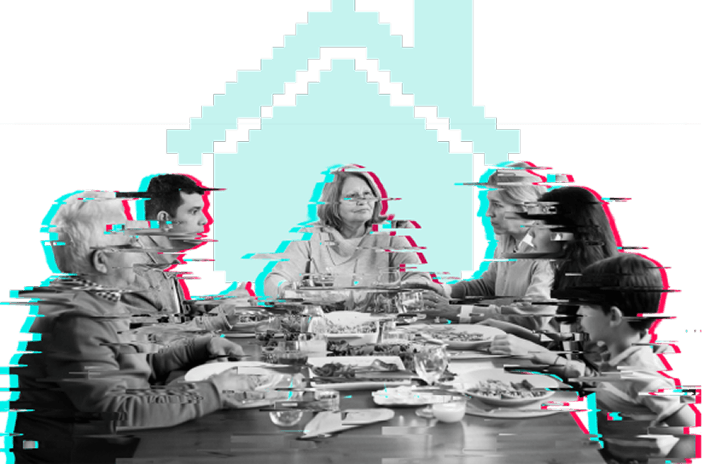
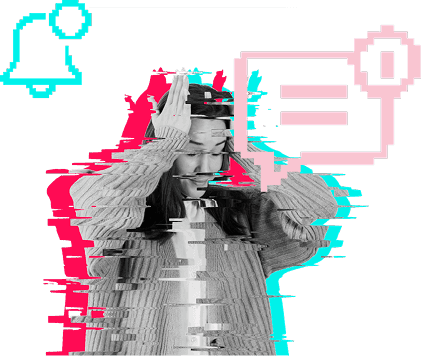

Mapeando la violencia digital
de género en Argentina
¿Qué es la violencia digital de género?
Silencios Digitales es el primer revelamiento nacional sobre violencia digital de género en Argentina.
Cada vez se habla más de este tipo de violencia. Pero la pregunta sigue siendo clave: ¿sabemos realmente de qué estamos hablando?
En un contexto de creciente digitalización de la vida cotidiana, las violencias que históricamente han afectado a mujeres y personas LGBTI+ no desaparecen: se transforman y se amplifican a través de las tecnologías digitales.
El hostigamiento constante, la vigilancia, la suplantación de identidad, la difusión no consentida de imágenes íntimas, los discursos de odio y los ataques coordinados en redes son algunas de sus expresiones más frecuentes.
Se trata de una problemática urgente, con consecuencias reales sobre la vida, la salud y la participación social de quienes la sufren. Sin embargo, hasta ahora, ha contado con pocos datos sistemáticos y respuestas institucionales insuficientes.
La violencia digital de género puede definirse como cualquier conducta dirigida contra mujeres, niñas y otras personas en razón de su orientación sexual, identidad o expresión de género, que cause daño y que sea cometida, facilitada o amplificada mediante el uso de tecnologías de la información y la comunicación (TIC).
Para comprender cómo se manifiesta —y cómo se reconoce— la violencia digital de género, en Silencios Digitales hicimos dos preguntas distintas.
Por un lado, una pregunta directa: si la persona consideraba haber vivido una situación de violencia digital de género
Por otro, una pregunta basada en hechos concretos: si había experimentado, en los últimos 24 meses, 18 situaciones específicas que la literatura y los marcos normativos reconocen como violencia digital de género.
Solo 23% contestó que sí ha vivido violencia de género en entornos digitales
14% manifestó no estar segura o seguro de haber vivido este tipo de violencia.
Sin embargo, cuando se indagó a partir de situaciones concretas
El 40% de las personas señaló haber atravesado al menos una situación de violencia digital de género en los últimos dos años
Estos datos revelan algo central: la violencia digital de género muchas veces se vive, pero no siempre se nombra ni se reconoce como tal.
Internet atraviesa nuestra vida cotidiana. Los datos de Silencios Digitales muestran una alta exposición diaria a entornos digitales.
Un 35% utiliza internet más de 6 horas por día
Un 35% pasa entre 4 y 6 horas diarias en plataformas digitales
Trabajamos, nos informamos, militamos, construimos vínculos, opinamos y participamos en la vida pública a través de redes y plataformas.
La pregunta es inevitable: ¿es un espacio seguro? ¿cómo lo habitamos?
Los datos muestran que la autocensura se convirtió en una estrategia extendida de supervivencia digital.
El 76% de las personas declara no sentirse libre de publicar lo que quiere en redes sociales
Entre los principales motivos para limitar lo que se publica se repiten patrones claros:

Evitar hablar de política para no generar conflictos con familiares o amistades
Evitar posicionamientos políticos por miedo a repercusiones laborales
Evitar ciertos temas por temor a que afecten la imagen pública o la credibilidad profesional
La violencia digital de género no es abstracta ni simbólica. Tiene impactos concretos y profundos en la vida de las personas.
En el plano emocional y subjetivo, quienes la vivieron relatan miedo, asco, angustia, bronca y malestar persistente.

En la salud mental, aparecen consecuencias que requieren atención profesional: ansiedad, ataques de pánico, depresión, aislamiento, dificultades para dormir y, en algunos casos, temor incluso a salir de la propia casa.
Estos efectos se trasladan también a las prácticas digitales. Muchas personas abandonan redes, restringen su presencia en línea o reducen drásticamente su participación pública como forma de autoprotección.
La violencia digital trasciende las pantallas.
Aparecen sentimientos de vulnerabilidad e inseguridad vinculados al miedo de que las agresiones se extiendan al plano físico y presencial.
Los efectos alcanzan también la vida social, laboral y material. En varios relatos surge el temor a encontrarse con los agresores en el espacio público, a ser perseguidas o vigiladas fuera de internet. Estas situaciones se intensifican cuando existe cercanía o conocimiento previo de quienes ejercieron las agresiones.
Los datos muestran un patrón consistente: hoy, la mayoría de las personas no cuenta con los conocimientos, herramientas ni apoyos institucionales necesarios para prevenir o responder a la violencia de género digital. Este déficit aparece tanto a nivel individual como en la posibilidad de activar una denuncia efectiva.
Un 66% afirma no saber cómo denunciar o no estar segura/o sobre cuáles son los canales disponibles para reportar estas situaciones
Un 62% no realizó ninguna formación o capacitación en seguridad digital en los últimos cinco años
El resultado es un escenario preocupante: alta exposición cotidiana en entornos digitales y muy pocas herramientas de autoprotección disponibles o conocidas.
Hacer de internet —y especialmente de las redes sociales— un espacio más seguro no es una responsabilidad individual. Los datos de Silencios Digitales muestran que, frente a la falta de recursos, información y apoyos efectivos, las personas demandan respuestas colectivas y estructurales.
Las medidas consideradas más útiles se organizan en tres niveles de acción.
-
#1
Responsabilidad de las plataformas
Las empresas tecnológicas también son parte del problema -¡y de la solución!-.
Un 61,9% exige mayor control, mejores canales de denuncia y respuestas más rápidas y eficaces por parte de las plataformas digitales.
#2Concientización y educación
La prevención aparece como una prioridad central.
Un 65% considera necesarias campañas de prevención que visibilicen la violencia digital de género y brinden información clara y accesible.
Un 62% demanda formación obligatoria en derechos y seguridad digital dentro del sistema educativo.
#3Fortalecimiento institucional y rol del Estado
Las personas reclaman un Estado presente, con capacidad de respuesta.

Un 62,4% señala la necesidad de leyes, organismos especializados y mecanismos de seguimiento de los casos.

Un 58,7% subraya la importancia de contar con acceso gratuito a apoyo legal y piscológico para quienes atraviesan estas violencias.
Los datos son claros: la violencia de género digital desborda las capacidades individuales. No alcanza con “cuidarse”, bloquear o dejar de publicar.
Se trata de un problema estructural que requiere políticas públicas sostenidas, educación en derechos digitales y plataformas que asuman un rol activo en la prevención, la protección y la reparación del daño.
Escuchar lo que dicen quienes viven esta violencia —y traducirlo en acción— es el primer paso para romper los silencios digitales.